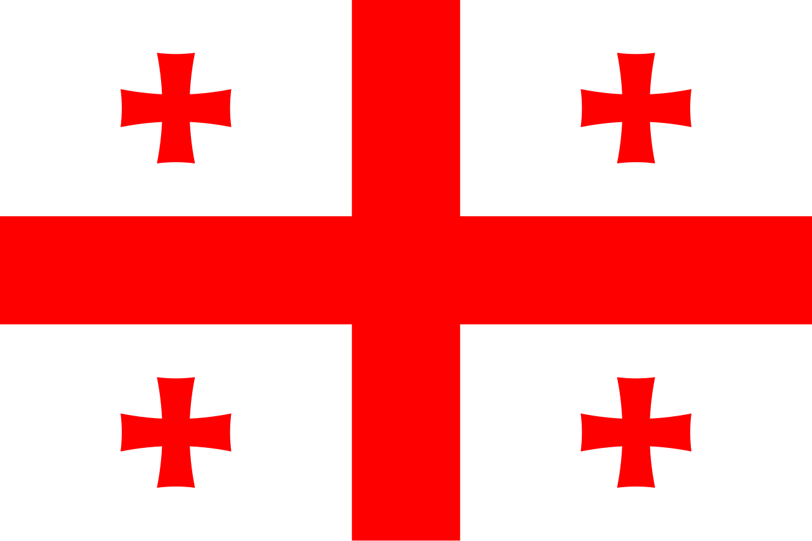
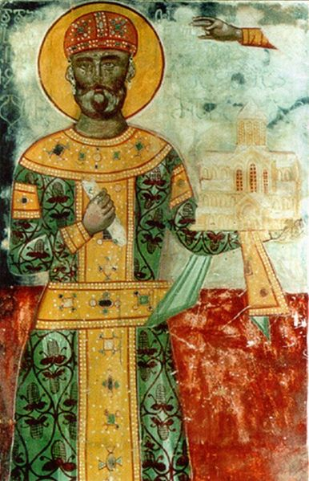

History of Saint and king Davit IV Agmashenebeli of Georgia

In 1089, a 16-year-old young man, King David IV, later known as David the Builder, ascended the throne of the Kingdom of the Abkhazians and Georgians. He was born in 1073 into
the family of King George II, belonging to the Bagrationi dynasty.
David the Builder, one of the most successful Georgian monarchs, managed to drive the Seljuk Turks out of the country after achieving a significant victory at the Battle of Didgori
in 1121. The reforms he introduced in the army and government enabled him to unite the country and bring the lands of the Caucasus under Georgian control. A supporter of Christian
culture and a devoted Christian himself, he was canonized as a saint by the Georgian Orthodox Church.
David was a great lover of books. Wherever he went, whether to war, hunting, or traveling, he always carried selected books with him. Whenever he sat down to rest, someone would
immediately bring him a book. When his eyes became tired, he would ask someone else to read aloud. David read the works of theologians and also studied ancient authors. He explored
subjects including religion, military affairs, economics, architecture, and law. According to his historian, once he became so absorbed in reading that he did not notice the enemy
approaching him. However, he needed books precisely to help him defeat invaders and aggressors.
His immense love of learning, along with other factors, probably contributed to the establishment of the academies of Ikalto, Gelati, and Gremi, where philosophy, rhetoric, arithmetic,
geometry, grammar, music, and astronomy were taught. He brought Georgian writers, scientists, and philosophers from abroad to work at these monasteries, including Ioane Petritsi and
Arsen of Ikalto. He also actively supported Georgian cultural and educational centers abroad.
Education is meaningless without spirituality. World history has rarely known a monarch as devout, worthy, and humble as David the Builder. He never took a step without his
spiritual father's blessing. At different times, his
spiritual fathers were Father Eustratius, Father Ioane, and Father Arseni. David was raised by the Bishop of Chqondidi, who was one of the most precious people in the king's life.
In his youth, David married an Armenian woman, with whom he had a son, Demetrius, who later became King Demetrius I. Nothing else is known about his first wife. His second wife
was Gurandukht, the daughter of Atrak Sharağani, the
leader of the Kipchaks. They had another son, Vakhtang (Tsuata), and daughters named Tamar, Katai, and Tamar the Younger. The elder Tamar married the Shah of Shirvan, Manuchehr II;
Katai married Alexios, the younger brother of Byzantine Emperor John Komnenos; and Tamar the Younger married the king of Ossetia during the reign of Demetrius I.
In 1099, David the Builder stopped paying tribute to the Seljuk Turks. The country gained complete independence. From this point onward, Georgia began to experience economic
and cultural growth. After restraining the Seljuk Turks, David began fighting to unite all Georgian lands.
In 1103, he captured Zedazeni. In 1104, with the help of nobles from Hereti and Kakheti who supported Georgian unification—Kavtar and his nephews Arishiani and Baram—he
incorporated Hereti and Kakheti into Georgia.
In 1110, the Georgian army captured Samshvilde; in 1115, Rustavi; in 1117, Gishi; and in 1118, Lore. In August 1121, under the leadership of David IV, the Georgians
fought a victorious battle against a coalition of Muslim forces. The battle took place near Didgori. The Georgians won thanks to David's clever military tactics. Their
victory saved their homeland from complete destruction. Following the Battle of Didgori, David the Builder incorporated Tbilisi into the Kingdom of Georgia in 1122.
David the Builder strongly supported the development of trade and craftsmanship. He created favorable conditions for merchants, built bridges and roads, and constructed
inns where merchants from different countries could stay overnight for free. As a result, urban life in Georgia developed significantly during the first quarter of the 12th century.
The construction of Gelati Monastery is associated with David the Builder; its construction began in 1106. He also founded the Gelati Academy, one of the most important
centers of Georgian culture. By David IV's order, a church dedicated to the Virgin Mary was built at Shiomgvime.
David the Builder also contributed to the development of Georgian hymnography. He wrote an original poetic work titled Hymns of Repentance (Galobani Sinanulisani), which
expresses the ideological and aesthetic beliefs of medieval Georgian culture.
David the Builder died in 1125. He was buried near the southern gate of Gelati Monastery, where a large stone bearing his epitaph has survived to this day. The inscription reads:
“This is my resting place forever and ever; this is what I desire: here I shall dwell.” However, after his canonization, his remains were exhumed and reburied inside the main
church of Gelati Monastery. The Georgian Church established January 26 (according to the old calendar) as the feast day of Saint King David.
